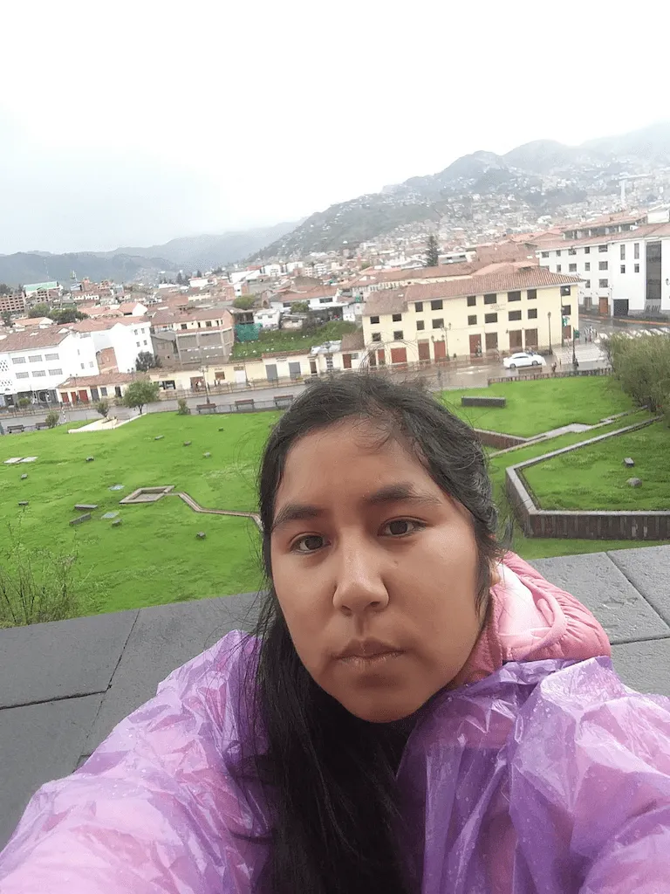

Tasha Vidal
About Me

My name is Tasha Vidal. I was born in Lima, Peru. I am a person with diverse abilities, which allows me to see the world from a different perspective. I served a full-time mission as a Service Missionary, which allowed me to serve in various places, including the Peru Lima Mission, the Lima North Mission, and the Lima West Mission, at the Temple Distribution Center, in Family History, and at a school. I accomplished all of this with the help of my Heavenly Father. I love to travel, edit videos, draw, and I am passionate about learning new things at my own pace.
Lima, Perú

Peru is a megadiverse country located on the western coast of South America, famous for being home to Machu Picchu, one of the Seven Wonders of the Modern World. Additionally, Peru is globally recognized for its exquisite gastronomy and for being a land of deep faith and cultural heritage; currently, the country has 4 completed temples and 6 more under construction.